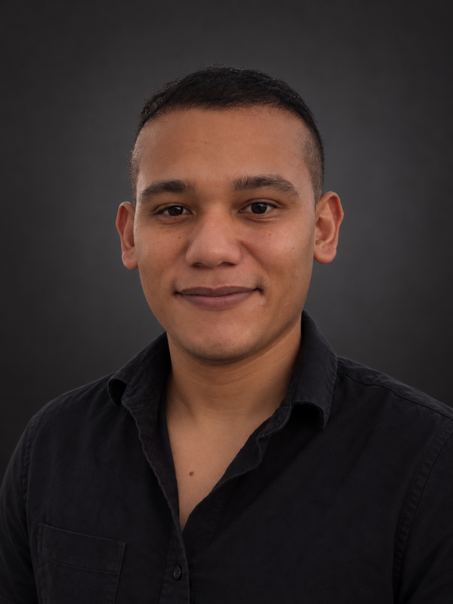

You don't need to understand how it works — you need it to work, on time, and exactly as agreed. Your time is the scarcest resource in this conversation, so I take the problem, solve it end to end, and remain the one person accountable for the result.

My background covers the full stack of what it takes to run technology for a business: I started writing software for banks and government institutions, spent nearly a decade inside Microsoft's Dynamics 365 and Power Platform ecosystem solving deep technical customizations at an escalation level, and today I manage IT and network infrastructure for an international organization while running my own product and equipment businesses on the side.
That combination is deliberate. It means I can sit in a discovery conversation and speak infrastructure, integration, data, and product strategy in the same sentence — then go build it myself, or direct the right specialist to do it, and verify the result actually holds up in production.
I work best with clients who want a technology partner for the whole arc of a project: framing the problem correctly, designing a solution that fits the business (not just the trend), implementing it, and proving it performs as designed before calling it done.
Where a project needs depth I don't carry in-house — specialized IT infrastructure deployments, licensed enterprise software implementations, or other specialized services — I bring in trusted partners I've worked with directly, so the engagement stays high-quality without me pretending to be a generalist at everything.
Whether it's a SaaS product, an internal platform, or an infrastructure overhaul, the process doesn't change.
Understand the real business problem before proposing a solution — not the other way around.
Architecture, data model, and integrations laid out before a single line of production code.
Hands-on implementation — directly, or coordinated with the right specialist partner for the piece that needs one.
Test and validate against the original design before handing it over — not just "it runs".
A track record across enterprise support, IT infrastructure management, software development, and founding my own technology ventures.
A selection of platforms currently running in production for real businesses and customers.
A B2B SaaS platform for pool maintenance technicians and companies in Costa Rica, with an offline-first field app for technicians and a read-only portal for pool owners. Currently in production beta with real users.
pacifikblue.com →A custom-built operations platform for RABCE Herramientas covering contracts, rental extensions, document numbering, pricing administration, and reporting — with a full automated test suite.
133 passing testsThe public-facing website for RABCE Herramientas, built with structured data, canonical tags, Open Graph metadata, and a keyword-driven SEO strategy for local search visibility.
rabce.com →Enterprise platform depth, modern product development, and the infrastructure knowledge to make it all run reliably.
For scopes that call for dedicated specialists, I coordinate a vetted network of partners so the engagement stays high-quality end to end, with me as the single point of accountability.
Partner for IT infrastructure implementation — networking, hardware, and managed deployments — for projects that need dedicated infrastructure capacity.
Michigan, USA-based experts in integral licensed software solutions, brought in for projects requiring enterprise-licensed platforms and integrations.
Access to a broader network of vetted providers across complementary services, engaged as each project's scope requires.
Universidad Nacional
Lead University
Dynamics 365 (2019) · Power Platform (2020) · Azure Fundamentals (2022)
Open to consulting engagements and partnership opportunities — from a focused technical build to a full solution coordinated across my partner network.
id="linkedin-link" or the placeholder href="#"
inside #contact.